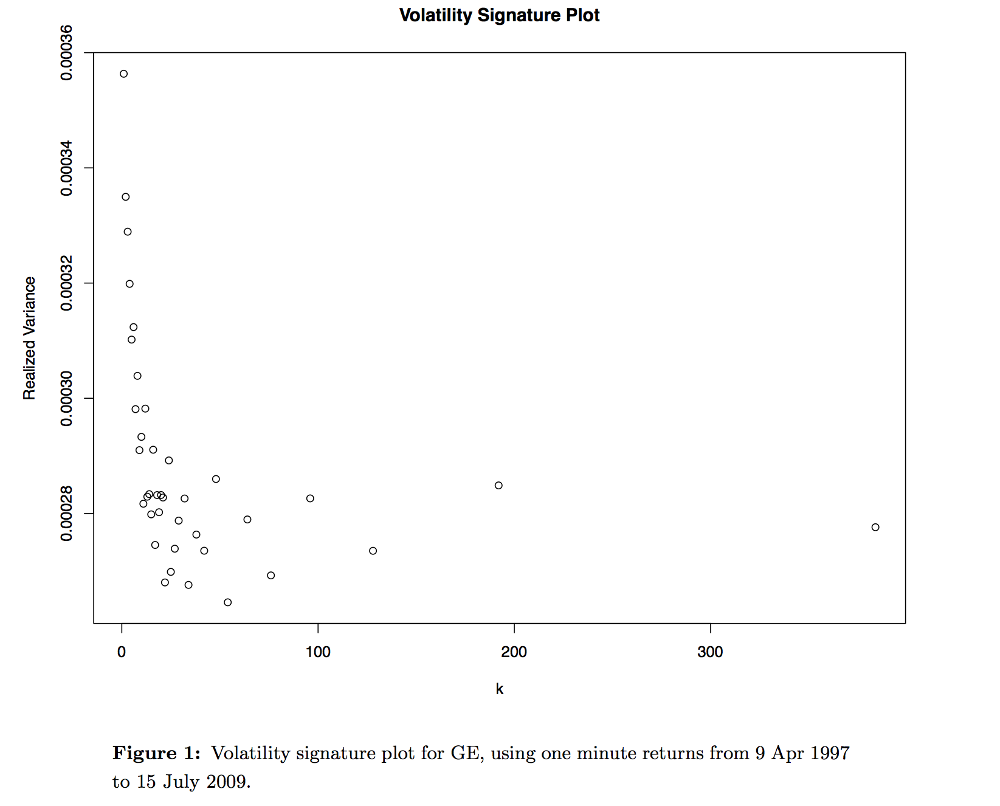

Motivation
Volatility estimation has typically taken several forms:
- Computing the sample variance of historical data.
- Computing implied volatilities using options.
- Computing model-based values using GARCH or SV models.
Motivation
Financial data has become more rich in the past two decades.
- Intraday trades and quotes can be used to estimate volatility on a daily basis using only historical data (no model).
Prices
Prices are typically modeled as a continuous time diffusion:
\[dp(t) = \mu(t) dt + \sigma(t) dW(t)\]
where \(W(t)\) is a standard Brownian motion.
- \(\mu(t)\) is the drift and \(\sigma(t)\) is the spot volatility.
Returns and Volatility
Returns are the integral of price changes:
\[r(t) = p(t) - p(t-1) = \int_{t-1}^t \mu(s) ds + \int_{t-1}^t
\sigma(s) dW(s)\]
Hence, the integrated variance is return variance between \(t-1\) and \(t\):
\[IV(t) = \int_{t-1}^t \sigma^2(s) ds\]
Realized Variance
Realized variance (RV) is the intuitive discrete approximation to the integrated variance (IV).
- Begin by dividing the time interval of interest, \((t-1,t)\), into subintervals of length \(\Delta\).
- The realized variance is the sum of squared deviations from the mean:
\[RV(t,\Delta) = \sum_{j=1}^{1/\Delta} (r(t-1+j\Delta, t) -
\hat{\mu}(t-1+j\Delta,t))^2.\]
- For short time horizons \(\hat{\mu}\) is considered to be zero.
Asymptotic Realized Variance
For the stochastic process specified above,
\[RV(t,\Delta) \to IV(t)\]
as \(\Delta \to 0\).
Microstructure Noise
Unfortunately, as \(\Delta \to 0\), observed price data no longer satisfy a diffusion process.
- Bid/offer bounce induces a correlation structure and discreteness in the data that is typically referred to as microstructure noise.
- This has provided limitations on the frequency at which returns data can be sampled when used for realized variance estimation.
- The standard over the past decade has been to sample returns at 5-minute intervals.
- Sampling the data at finer frequencies can lead to severe bias in realized variance estimation.
Volatility Signature Plot
Current Financial Data
High-frequency trading and algorithmic trading have generated a wealth of financial data in recent years.
- Consider SPY, a very liquid ETF that tracks the S&P 500.
- The average daily volume for SPY over the last three months is 104,626,000 shares.
- This is comprised of roughly 250,000 individual daily trades (an average of 450 shares per trade, or so).
- Given 23,400 seconds in the trading day between 9:30 A.M. and 4:00 P.M., that amounts to roughly 10 trades per second or 1 trade every 100 milliseconds.
- Quote data is probably 10 times as dense.
Data Loss
Consider 5-minute RV.
- This estimator uses only 78 price observations over the course of the day to estimate daily volatility.
- This represents a data loss of 99.97%
- If we could optimally filter the microstructure noise, we could retain the informative part of each data point.
Filtering methods
In the past couple of years, several papers have proposed filtering methods.
- The most popular is the realized kernel estimator:
\[RK(t,H) = \sum_{-H}^H k\left(\frac{h}{H+1}\right) \hat{\gamma}_h.\]
- This is a special case of a smoothed estimator of the spectral density:
\[\hat{S}(f) = \sum_{-(N-1)}^{N-1} k\left(\frac{h}{H+1}\right)
\hat{\gamma}_h e^{-i2\pi f h \Delta t}.\]
Filtering methods
In practice, realized kernel estimators have been implemented with Bartlett and Parzen filters.
- The Bartlett and Parzen filters were proposed for spectral density estimation in 1950 and 1961, respectively.
- New methods have been developed over the intervening decades.
- For example, multitaper estimation or estimation via wavelets.
Wavelets
A wavelet decomposition of a time series is an orthonormal, additive decomposition.
- Wavelet coefficients can be thought of as weighted averages of adjacent times series values.
- A wavelet decomposition is not unlike a spectral decomposition, except that the component series are related to varying time scales rather than varying frequencies.
Wavelet Multiresolution Analysis

Volatility Signature Plot

Conclusion
We believe that more advanced filtering methods may improve volatility estimation with intraday data.
- Bias and variance properties of RV estimators may be improved.
- They may more optimally filter microstructure noise.
- Asymptotic convergence may be faster.
- As a result, we may be able to use data at finer sampling frequencies and even use finely sampled data to estimate intraday volatility (not just daily volatility).